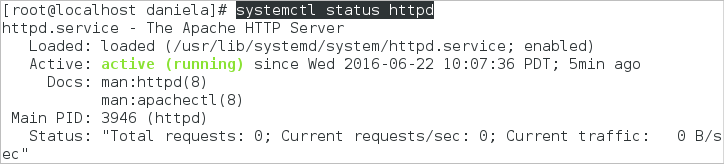

- Overview
- Summary
- Disclaimer
- Environment
- Step 1: Update your Server
- Step 2: Remove MariaDB
- Step 3: Install MySQL 5.6.XX
- Step 4: Install Apache 2.4
- Step 5: Install PHP 7
- Start php-fpm
- Configure PHP Default Settings for Production Environments
- Configure php-fpm File
- Install and Configure OpCache
- Step 6: SELinux Configurations
- Step 7: Install Firewall and Open ProcessMaker's Port
- Step 8: Install phpMyAdmin
- Step 9: Install and Configure Supervisor
- Step 11: Reboot the Server
- Configuration and ProcessMaker Installation
Overview
Stack 225 provides detailed information about the database and application server configurations needed to correctly install the following versions of ProcessMaker on the platform CentOS/RHEL 7.x under Apache web server.
| ProcessMaker 3.3.x | ProcessMaker 3.4.x |
Stack 225 is supported by ProcessMaker, meaning that it has been tested by the Quality Control team.
Summary
| Platform | Database | PHP |
|---|---|---|
| CentOS/RHEL 7.x (Latest version) | MySQL 5.6.x | 7.1.x |
| Web Server | Filesystem | Architecture |
| Apache 2.4.x | ext4 | 64-bit |
Disclaimer
The stack procedure and references described below are used by ProcessMaker in its cloud environment and it works appropriately in cloud configurations. If this stack is implemented on-premises, ProcessMaker Inc. does not guarantee the stack functions correctly.
Environment
Assuming you already have a CentOS 7.2.x Core or Desktop installed and have the proper permissions, by typing the comand sudo su and entered the administrator password you can execute the following commands in order to have the stack ready to install ProcessMaker.
Step 1: Update your Server
Make sure that your server is the latest version.
Warning: Depending on your CentOS version, the server update should take a long time to complete.
Step 2: Remove MariaDB
By default CentOS 7.2 comes with some MariaDB modules installed. We need to uninstall them.
Step 3: Install MySQL 5.6.XX
| Warning: ProcessMaker is not compatible with MySQL STRICT mode, which is enabled by default as of MySQL 5.6.6. Read the Turning Off MySQL STRICT Mode section to learn how to disable it. |
In order to install MySQL 5.6.x, use the following steps:
1. Run the command lines to download the repositories:
2. Use these command lines to configure the repository and install MySQL 5.6.x:
3. Start the MySQL service and set it to start automatically at boot.
4. Make sure the mysql service is running by checking its status with the following command:
The status of the mysql service should be "active (running)":

MySQL Configuration
Before using MySQL, use the mysql_secure_installation command to set up a secure database environment. Log in as the root user and issue the following command:
Note: In some cases the password is already defined so you need to check it before you run the mysql_secure_installation and change it, to do this use the following command:
Then follow the wizard's instructions to secure MySQL as follows:

1. Enter the root password.

2. Change the root password.
Warning: ProcessMaker does NOT support special characters (such as: @ # $ % ^ & ( /) in the root password. For more information, please read this section.

3. Confirm to remove anonymous users.

4. Confirm to disable the root login.

In the case MySQL is in another server, you must create a new user and give this user the permissions to access.
5. Confirm to remove the test database.

6. Reload privilege tables.

The MySQL installation is now secure.

7. Restart the mysql service.
Step 4: Install Apache 2.4
mod_ssl is an Apache module that provides SSL v2/v3 and TLS v1 support for the Apache HTTP server necessary for ProcessMaker.
Run the following steps to install Apache 2.4 and the SSL module:
1. Install Apache and SSL module:
2. Start the Apache service and set it to start automatically at boot.
3. Make sure the httpd service is running by checking its status with the following command:
The status of the httpd service should be "active (running)":

Enable Apache Modules
ProcessMaker needs to use the expires, rewrite, deflate and vhost_alias modules on the Apache web server. Check to see whether these modules are enabled by opening the Apache configuration file found at /etc/httpd/conf/httpd.conf.
If working with CentOS 7, the file used to configure modules is found at:
To configure the modules use the following steps:
1. Uncomment the following modules (remove the semicolon ; at the beginning of each line):
2. After editing the httpd.conf file, it is necessary to restart the Apache web server to use the new configuration:
Step 5: Install PHP 7
Add the EPEL (CentOS 7.x) repositories or RedHat ones to install PHP. In this guide we will use EPEL, follow these steps:
1. Add the repositories.
rpm -Uvh https://mirror.webtatic.com/yum/el7/webtatic-release.rpm
2. Install PHP and its modules.
3. To check if all the PHP modules were installed, run the following command:
The outcome will be similar to the following:

Start php-fpm
Run the following commands to start php-fpm:
Configure PHP Default Settings for Production Environments
The default configuration of PHP should be able to run on ProcessMaker; however, for production environments it is recommended check the following settings to see if PHP's configuration file php.ini has been modified. Log in as the root user and edit PHP's configuration file php.ini using these steps:
1. Open the file php.ini
2. Search for the following lines and edit them using the following configuration:
Configure php-fpm File
To configure php-fpm follow these steps:
1. Open the php-fpm configuration file.
2. Include the following to the configuration file:
user = apache
group = apache
listen = /var/run/php-fpm/processmaker.sock
listen.mode = 0664
listen.owner = apache
listen.group = apache
pm = dynamic
pm.max_children = 100
pm.start_servers = 20
pm.min_spare_servers = 20
pm.max_spare_servers = 50
pm.max_requests = 500
php_admin_value[error_log] = /var/log/php-fpm/processmaker-error.log
php_admin_flag[log_errors] = on
Install and Configure OpCache
Do the following steps:
1. Set OpCache pre-configurations.
2. Set OpCache configurations.
sed -i '/opcache.max_accelerated_files=4000/c\opcache.max_accelerated_files=10000' /etc/php.d/opcache.ini
sed -i '/;opcache.max_wasted_percentage=5/c\opcache.max_wasted_percentage=5' /etc/php.d/opcache.ini
sed -i '/;opcache.use_cwd=1/c\opcache.use_cwd=1' /etc/php.d/opcache.ini
sed -i '/;opcache.validate_timestamps=1/c\opcache.validate_timestamps=1' /etc/php.d/opcache.ini
sed -i '/;opcache.fast_shutdown=0/c\opcache.fast_shutdown=1' /etc/php.d/opcache.ini
Step 6: SELinux Configurations
Regardless of which web server application your ProcessMaker stack uses, if ProcessMaker is installed in the /opt directory, it is necessary to either configure SELinux to allow the web server to read/write the directory where ProcessMaker is installed. Alternatively, you can disable SELinux temporarily or permanently. Refer to the sections below that describe how to perform each of these options.
Configuring SELinux
To configure SELinux so the web server can read/write to the /opt/processmaker directory, follow these steps:
1. Log in as the root user and issue the following commands from the terminal:
2. Configure the web server to send emails:
3. To run ProcessMaker on any port other than the default ports of 80, 443, 488, 8008, 8009 and 8443, SELinux needs to be configured to allow another port to be used. For example, to use port 8080:
Disabling SELinux
Disabling SELinux causes so many problems that it is often easier to disable it. Follow these steps to disable SELinux:
1. Run the following commands to disable SELinux:
2. Do NOT forget to restart the server to permanently disable SELinux.
Temporarily Disabling SELinux
To temporarily disable SELinux to debug a problem, log in as the root user and issue the command:
The changes will take place immediately.
If need to go back only need to run the following command or reboot the server:
Step 7: Install Firewall and Open ProcessMaker's Port
By default, CentOS 7 can not work without a firewall, therefore it is recommended to install Firewalld so it can be easily configured. Firewalld is a dynamic daemon that manages a firewall with support for networks zones. To install it run the following steps:
1. Install Firewalld.
2. Set the service to start automatically.
3. Open the port where ProcessMaker will run, which is port 80 by default or port 443. To use a port other than port 80 or 443, it is necessary to change the port number using the following command.
Step 8: Install phpMyAdmin
In order to install phpMyAdmin use the following steps:
1. Download the latest English-language version from here or use the command:
Replace the X.X.X with the version you want to use. Ensure that version is compatible with the current version of php, mysql and apache.
2. Extract the files using the command:
3. Rename the directory:
4. Create the config file in the Apache directory:
In the file add the following lines:
Save the changes.
5. Give permissions to the directory:
6. Restart the Apache service.
In a browser use https://IP-HOST/phpmyadmin URL to access phpMyAdmin. Replace the IP-HOST with the IP of your server.
Step 9: Install and Configure Supervisor
Available Version: As of ProcessMaker 3.4.0.
Follow the next steps to install and configure a Supervisor:
Note: After every command execution, verify if there are error or warning messages. This may be due to wrong file permissions.
Open a terminal and run as a supervisor user by writing the following.
su or sudo -i Install and enable the Supervisor.
yum -y install supervisor systemctl start supervisord systemctl enable supervisord Create the laravel-worker-workflow.ini file in the /etc/supervisord.d/ folder.
nano /etc/supervisord.d/laravel-worker-workflow.ini Add the following lines, and save the file.
[program:laravel-worker-workflow] user=apache directory=/opt/processmaker/ command=/opt/processmaker/processmaker artisan queue:work --workspace=workflow stdout_logfile=/opt/processmaker/worker-workflow.log autostart=true autorestart=true If you have two workspaces or more, add the following lines. For example, the workflow and sample workspaces.
[program:laravel-worker-workflow] user=apache directory=/opt/processmaker/ command=/opt/processmaker/processmaker artisan queue:work --workspace=workflow stdout_logfile=/opt/processmaker/worker-workflow.log autostart=true autorestart=true [program:laravel-worker-sample] user=apache directory=/opt/processmaker/ command=/opt/processmaker/processmaker artisan queue:work --workspace=sample stdout_logfile=/opt/processmaker/worker-sample.log autostart=true autorestart=true Enable the laravel-worker-workflow configuration.
supervisorctl reread supervisorctl update sudo supervisorctl stop all sudo supervisorctl start all sudo supervisorctl status all Restart the Supervisor service:
sudo systemctl stop supervisord.service sudo systemctl start supervisord.service sudo systemctl status supervisord.service
The queue work is ready to run.
Take into account:
- Depending on the distribution, the directory route must maintain order. This will specify the processmaker workspace.
- Verify that the configured log file has permissions in the stdout_logfile route. It is recommended that the log file (stdout_logfile) be located within the shared folder of processmaker: /shared/worker.log. This may not be advisable if your environment has many workspaces that have a large workload, your log would be lost in time.
- The parameters of the command route must be valid according to the workload. For more information consult the Laravel documentation.
Step 11: Reboot the Server
After all these installations, reboot the server.
Configuration and ProcessMaker Installation
To learn how to install and configure ProcessMaker, read Configuration and ProcessMaker Installation.